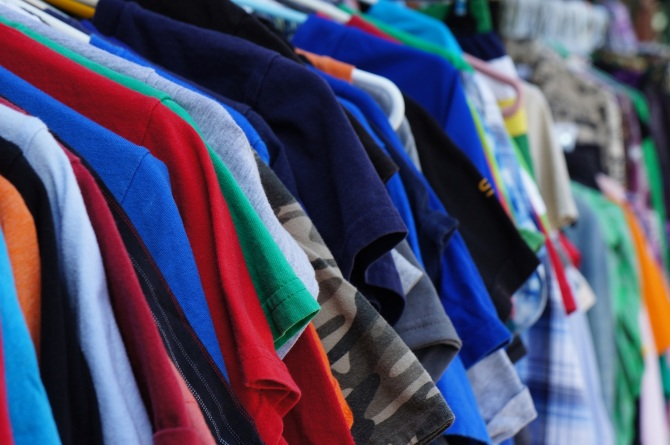

Horus es una marca de moda que fusiona estilo, comodidad y sostenibilidad para ofrecer prendas de alta calidad diseñadas para el ritmo de vida moderno. Desde nuestras primeras colecciones, hemos buscado romper las barreras entre lo clásico y lo vanguardista, creando ropa que no solo refleja las últimas tendencias, sino que también se adapta a las necesidades de quienes buscan expresarse a través de su vestimenta.
Nos enorgullece ofrecer una amplia gama de productos, desde ropa casual y de trabajo hasta colecciones más exclusivas para ocasiones especiales. Cada prenda está cuidadosamente diseñada, utilizando materiales de primera calidad y procesos de producción responsables, que garantizan tanto la durabilidad como el respeto por el medio ambiente.
¿Por qué Nosotros?
1º Selección Premium de Materiales: el primer día, nos comprometimos a trabajar solo con los mejores proveedores del mundo, seleccionando telas orgánicas, sostenibles y de alta calidad. Cada fibra que utilizamos es cuidadosamente elegida para garantizar que tu ropa no solo se vea bien, sino que también se sienta increíble en tu piel.
2º Comodidad Inigualable: Sabemos que lo que te pones no solo tiene que ser hermoso, sino también cómodo. Nuestras telas están diseñadas para adaptarse perfectamente a tu cuerpo, permitiéndote moverte con libertad. Ya sea un vestido de seda suave, un abrigo de lana de alta calidad o una camiseta de algodón orgánico, sentirás la diferencia en la suavidad, la transpirabilidad y el ajuste.
3º Durabilidad y Resistencia: En Horus, no creemos en la obsolescencia de la moda. Nos aseguramos de que cada prenda esté construida para resistir el paso del tiempo, sin perder su forma ni su calidad. Nuestras telas están diseñadas para mantener su color, textura y suavidad incluso después de muchos lavados. ¿El resultado? Ropa que no solo dura, sino que mejora con el tiempo.
4º Innovación Textil: Estamos a la vanguardia de la tecnología textil. Trabajamos con materiales de última generación, como telas inteligentes que regulan la temperatura, absorben la humedad o incluso se autolimpian. Además, contamos con una amplia gama de tejidos ecológicos, como el Tencel y el lino, que no solo son sostenibles, sino que también tienen propiedades que mejoran la salud de tu piel y el medio ambiente.
5º Telas que Respiran y Se Adaptan a Ti: Sabemos que cada momento del día exige algo diferente, por eso nuestras colecciones están creadas para ser versátiles. Desde ropa para el trabajo, hasta atuendos para una noche de gala, nuestras telas se adaptan a cualquier ocasión. ¡La comodidad y el estilo no tienen que ser excluyentes!
¿La mejor compañia?
1º Sostenibilidad y cuidado del planeta:Mi cadena de suministro está diseñada para reducir la huella de carbono y promover la circularidad: ofrecemos opciones de reciclaje y programas de recompra para prolongar la vida útil de nuestras prendas. Asegurando que cada prenda se produzca con un mínimo de residuos y utilizando procesos de fabricación responsables.
2º Condiciones Laborales Justas y Transparencia:La ética laboral es uno de nuestros pilares. Trabajamos solo con fábricas que cumplen con estrictos estándares de derechos laborales, garantizando un salario justo, condiciones de trabajo seguras y respeto por los derechos de los trabajadores. Además, nuestros procesos son transparentes, puedes rastrear el origen de cada prenda y conocer las condiciones exactas en que fue fabricada.
3º Precios Justos y Accesibles:Creemos en el valor del trabajo y en ofrecer productos de calidad a precios justos. A través de una gestión eficiente y la eliminación de intermediarios innecesarios, podemos ofrecerte prendas de alta calidad a precios accesibles, sin sacrificar los valores éticos y morales.
4º Diversidad e Inclusividad:Nos esforzamos por representar y servir a todas las personas, sin importar su género, tamaño, color de piel, orientación sexual o cualquier otra característica. Nuestras colecciones son inclusivas, con una amplia gama de tallas y estilos, y me aseguro de que todas las personas se sientan representadas y valoradas.
Palabras de nuestro CEO